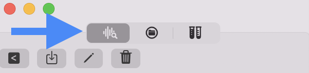
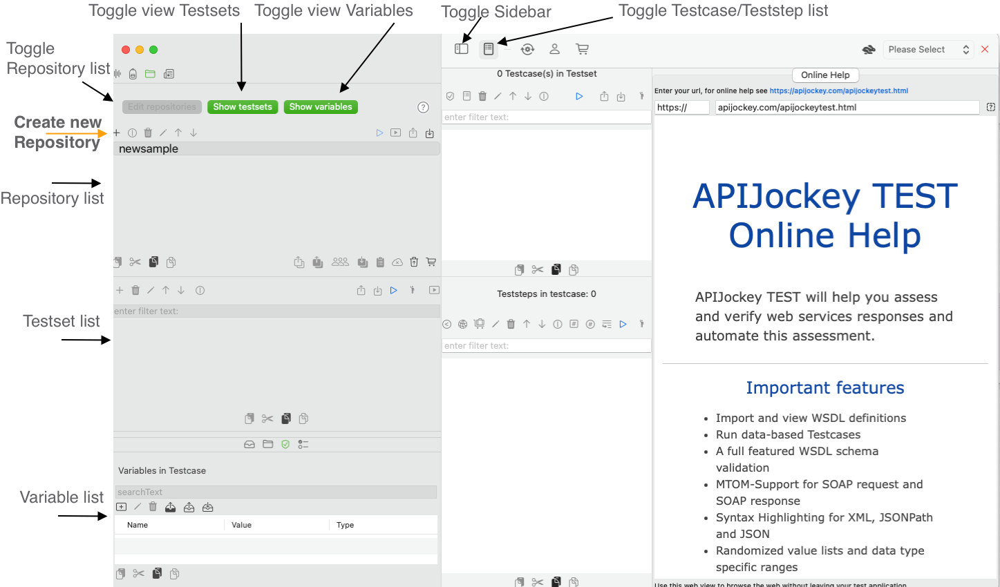
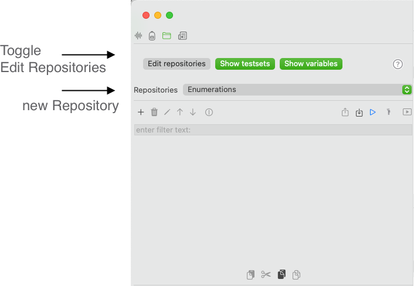
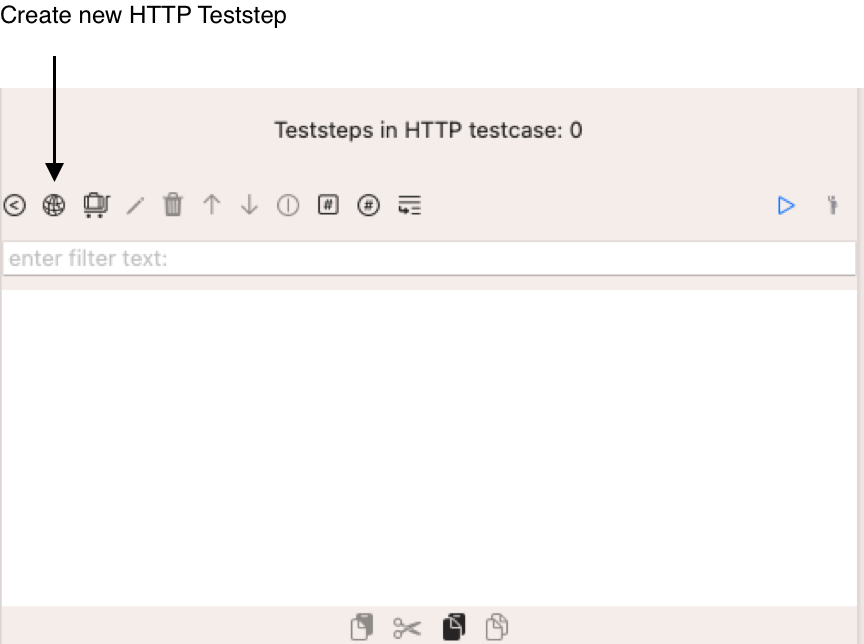

Create an Endpoint Service Definition
An Endpoint (reference) contains the webservice definition, technically. For A SOAP webservice this is the WSDL.
Short Overview of the task
- Switch to the endpoint view
- Create an endpoint and enter the endpoint-wsdl URL
- Download the WSDL definition
- View the endpoint definition
- Next steps
If you want to test a SOAP webservice, you need to import the WSDL. This has several reasons
- APIJockey TEST will read all types, operations, port types, messages and bindings provides these information in a searchable view.
- The creation of SOAP Teststep will require you to enter a specific operation. This is the base for the schema validation of your request.
Create an Endpoint (reference)
Start APIJockey TEST in Launchpad  You will see the sidebar on the left. On the top just before the colored window handles, you will see the tab bar. When you start APIJockey TEST, the tab Test defintion is selected.
You will see the sidebar on the left. On the top just before the colored window handles, you will see the tab bar. When you start APIJockey TEST, the tab Test defintion is selected.

Switch to endpoint definition as shown here:

This view will be empty when you haven't yet imported a WSDL definition. We will use an WSDL created by the w3c.org consortium which you can find here and load in your browser.
http://schemas.xmlsoap.org/ws/2004/09/enumeration/enumeration.wsdl
Let's drag the sidebar to the right, this will show the tabs Endpoint, Test Definition and Test Execution

Click the Button New Endpoint Reference
A new modal dialog comes up. Enter the following URL: http://schemas.xmlsoap.org/ws/2004/09/enumeration/enumeration.wsdl. In general the WSDL is passed as an URL-Parameter, but we take the url as provided. Add the following data: 1 Enter the URL 2 Tab to next textfield to see a default endpoint name 3 Make sure the toggle start download after confirmation is enabled. 4 Confirm the dialog with OK.

The Application will download the WSDL data and display a new entry unter Endpoints with the endpoint name you entered. The first part is done. When you select an endpoint and click the tab types you will see the list of XSD files that imported to or included in the WSDL. You can select each of them, read them and search within them
When you select an endpoint and click the tab Textview you will see original the WSDL. You can search here as well.
Once you have an Endpoint (reference), you will be able to create a SOAP Teststep. You have the option to create SOAP and HTTP-Teststeps without endpoint references; These teststeps will not support WSDL schema definitions and Run Environment settings.
See Testdefinition and Run Environment
Create a Test definition hierarchy
When you work with a large number of webservices, with various releases, you will find it necessary to organize your tests in a structured, hierarchical way.
API-Jockey organizes tests in a hierarchy of - Repository lists - Testset lists - Testcase lists and - Teststep lists.
Here, we will walk through the creation of such a Test definition hierarchy to get you started.
- A Repository, see
- A Testset
- A Testcase
These tree elements are mandatory for creating teststeps. APIJockey TEST provides several types of Teststeps. See more in View Teststep list
Create a Repository
When you launch APIJockey TEST you will see a number of views. We will walk through some of these views in this tutorial.

Click on the button Create new Repository to create a new Repository. This will open a dialog where you must enter the name of the new Repository. We enter the name Enumerations

Enter a unique name for the Test Repository. We'll call it Enumerations.Confirm with OK. You can rename the repository at any later point in time. You will get the following view:

As you can see the toggle Edit repositories has become available, since there is a repository selected. You use this option, when you need to work on your Repository list. Untoggle the option Edit repositories**, this will disclose the repository list. You can switch between the repository be selection one of them from dropdown list:

Create Testset
You are ready to create your first Testset. click with your mouse on the Button new Testset.

This opens a new dialog, enter folder as the testset name. Select the new testset and make sure, the Testcase/Teststep list is visible. The testcase view shows the testcases associated with the currently selected testset, which is an empty list for now.

Create Testcase
To create a new Testcase click the + (new Testcase)

Drag the lower right edge of the dialog more to the right to get more space for the name. Enter the name Sample Testcase.Confirm with OK.
Now, you have a completed Testdefinition hierarchy and can start creating teststeps. You may continue reading with:
- Create a Databased testcase
- Create an HTTP Teststep
- Create a SOAP Teststep
- Create a Randomize Teststep
- Create a Tabulardata Valuelist Teststep
- Create a Manual Valuelist Teststep
- View Datatransfer Teststep
Create an HTTP Teststep
A HTTP teststep performs URL requests for various HTTP methods with or without body JSON data.
Prerequisites to create an HTTP Teststep
- Create a Repository
- Create a Testset
- Create a Testcase
- You have selected a testcase
Steps to create an HTTP Teststep

The globe icon-ed button creates a new HTTP Teststep.
This opens a dialog, which asks you to enter a name for the new teststep. Click cancel, if you changed your mind and don't want to create a HTTP teststep any more.

When you confirm with OK, the teststep will be created and is visible in the teststep list.

See details to configure and run your HTTP Teststep in HTTP Teststep View Learn about using Run Environments in Run Environments
Create a SOAP Teststep
A SOAP teststep performs sends a SOAP/XML payload (Request) to a specified URL and waits for the SOAP/XML response payload
Prerequisites to create a SOAP Teststep
- Create a Repository
- Create a Testset
- Create a Testcase
- You have selected a testcase
Select the new test case. Then move the mouse down to the teststeps list . Click the Button Create new SOAP Teststep

- Enter a unique teststep name EnumerateOp
- disclose the soap endpoint operation list for enumeration.wsdl
- Select EnumerateOp from the list.
- Confirm the dialog with OK

APIJockey TEST has created a starter request for you.Next, move the separator line between request window and Test list window to the left as much as possible (1) and (2) drag the separator line between request and response fully to the right.

Now, it may make sense to further increase the request window size. Go the Menu Viewand toogle Hide Sidebar. This makes the sidebar invisible.
 Congratulations, you have your first request. In real life, you would have to
Congratulations, you have your first request. In real life, you would have to
- provide a Service Url in (1)
- set authentication data or remove basic authentication.
- Verify the Test step config settings in (3)
- Run the SOAP Request
- Review errors in (5)

Learn about using Run Environments in Run Environments